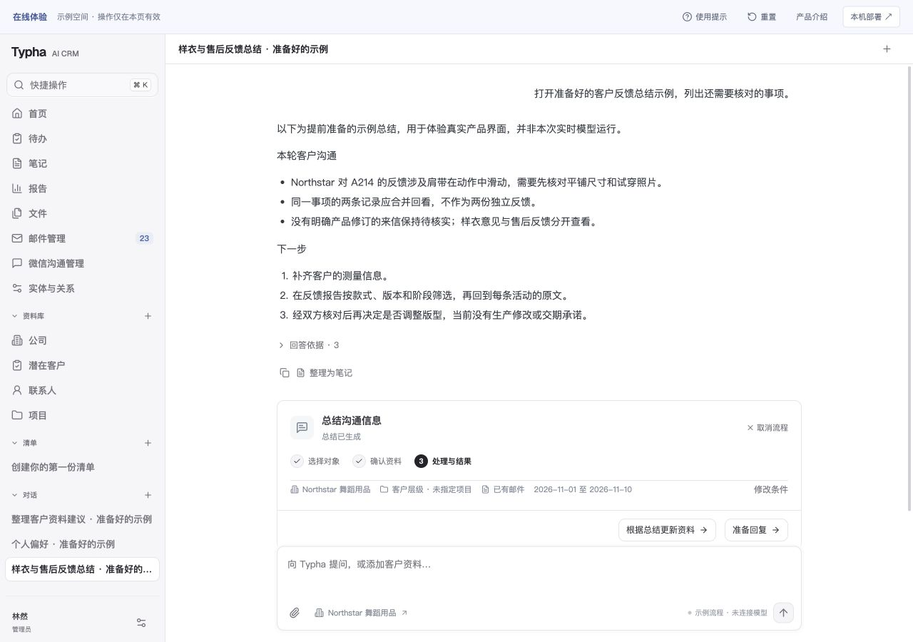
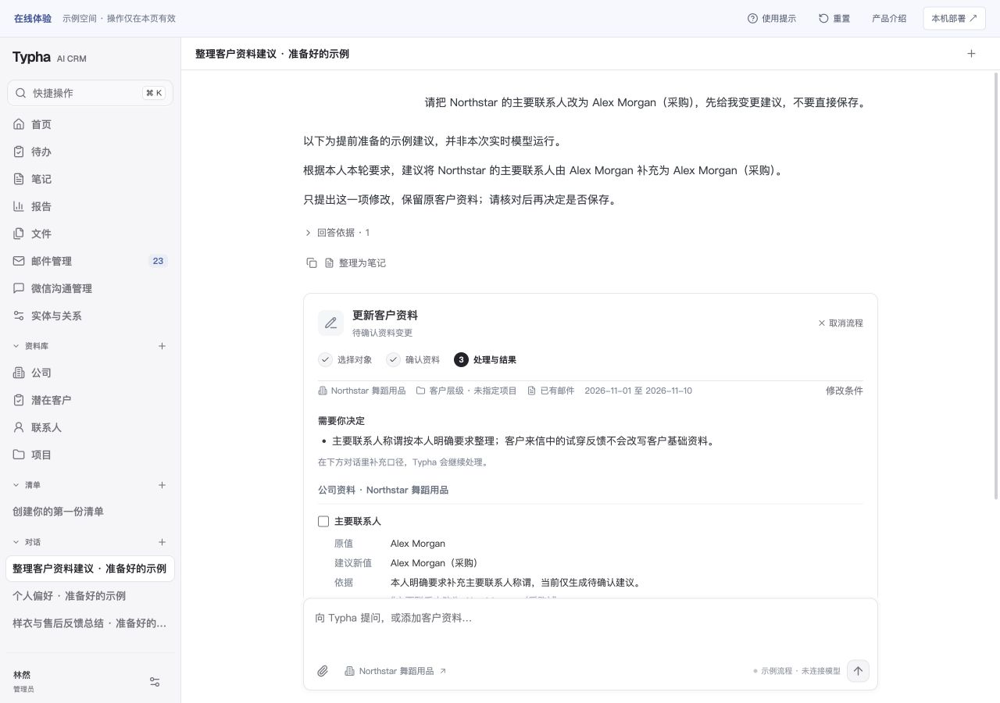
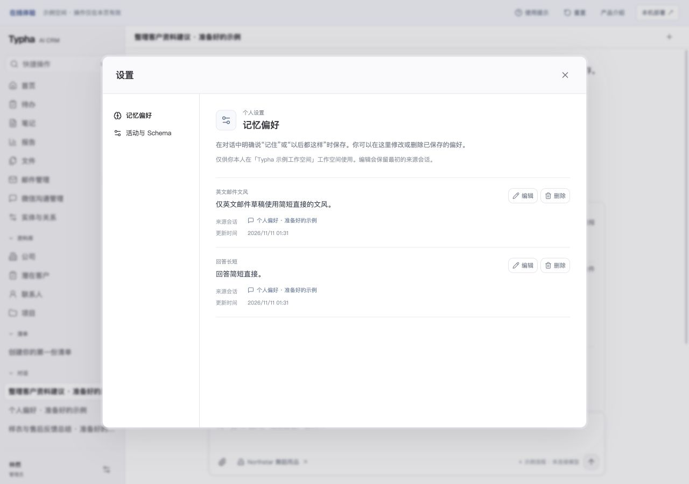
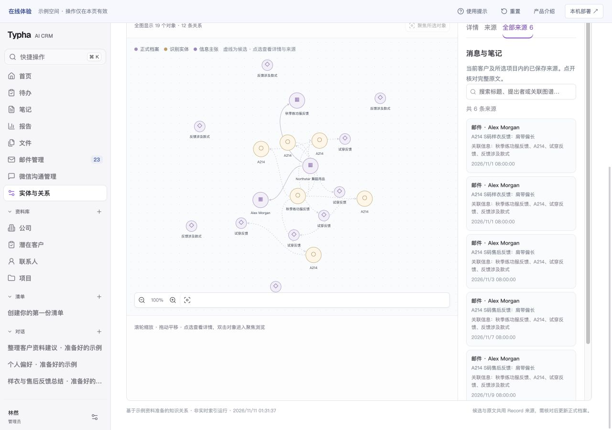

客户工作，一处接上
团队小，也能把关系照顾好。
同一份客户上下文
公司、联系人、项目和已关联沟通放在一起。用表格查找、筛选资料，打开预览或完整档案，引用业务信息时能回到原文核对。
知道下一步在等什么
每笔咨询分别记录已知条件、未满足项、等待方和负责人；待办沿用同一业务状态，交给同事时保留背景与处理结果。
回复准备与发送确认
结合选定来信、资料、模板和答复口径准备草稿。正式修改与邮件发送按业务流程确认，持续任务可在切页后恢复。
售后反馈与产品改进
将已有活动字段映射到产品、问题及尺码等维度。筛选独立反馈、查看涉及客户并回看原话，为研发讨论保留依据。
AI 辅助工作
带着上下文，接着往下做。
从沟通总结、资料变更建议，到可管理的偏好与有来源的知识关系。每一步都能查看，并回到依据核对。
以下取自产品实际界面，使用示例资料与准备好的流程。点击图片可查看大图。

按选定客户与资料范围梳理要点，查看任务条件，打开引用原文。

对照已有字段与整理建议，未确认的信息保留为待核对事项。

明确保存沟通习惯，查看来源，按需要修改或删除。

围绕客户浏览实体与关系，区分候选信息，并回到每条主张的原话。
现在就能试用
打开界面，试着处理一件事。
在线体验预置了客户、沟通记录、待办和售后看板。你可以搜索客户、查看原活动、填写待办结果和筛选报告；操作仅在当前页面保留。
体验空间使用示例资料，AI 流程展示准备好的示例，不连接真实模型或邮箱。完整应用可在企业本机运行，并接入自己的资料与模型服务。